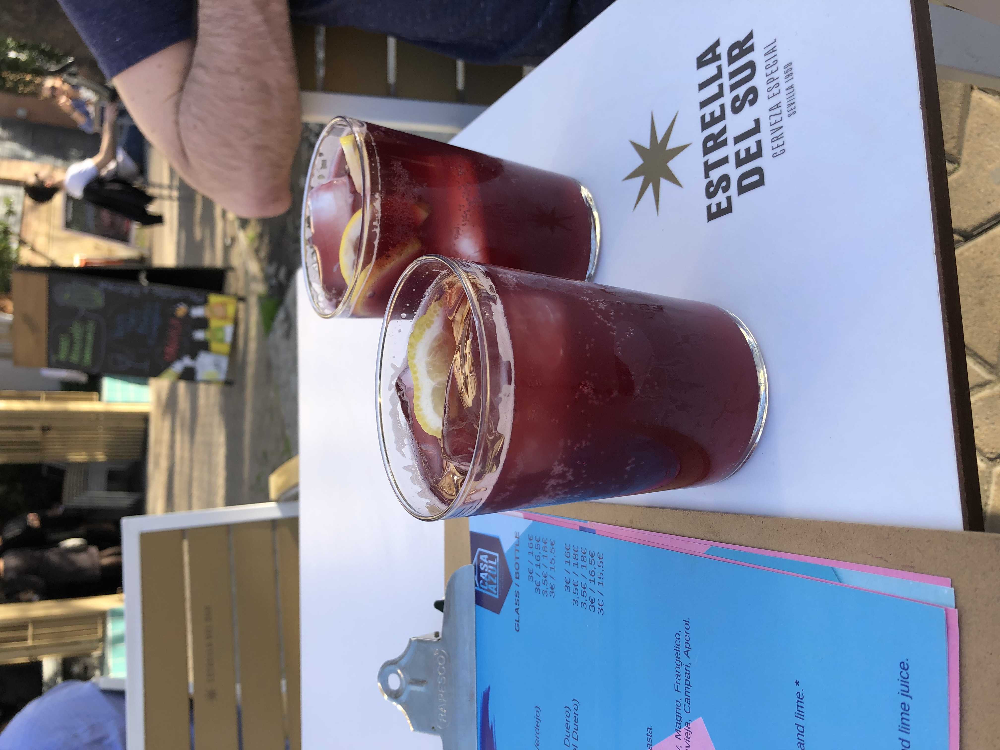

References
w3schools.com, 2020. HTML Styles CSS. [online] Available at: https://www.w3schools.com/html/html_css.asp [15 Sep 2020]
Seek, 2020. IT Project Co-ordinator. [online] Available at: https://www.seek.com.au/job/50435031?type=standard#searchRequestToken=90b1876f-a0b3-4db7-8b27-b83e8d69ffc0 [15 Sep 2020].
16personalities.com, 2020. Free personality test. [online] Available at: https://www.16personalities.com/ [15 Sep 2020]
Educationplanner.org, 2020. What's Your Learning Style?. [online] Available at: http://www.educationplanner.org/students/self-assessments/learning-styles.shtml [14 Sep 2020]
123test.com. 2020. Competency Test. [online] Available at: https://www.123test.com/competency-test/ [14 Sep 2020]
